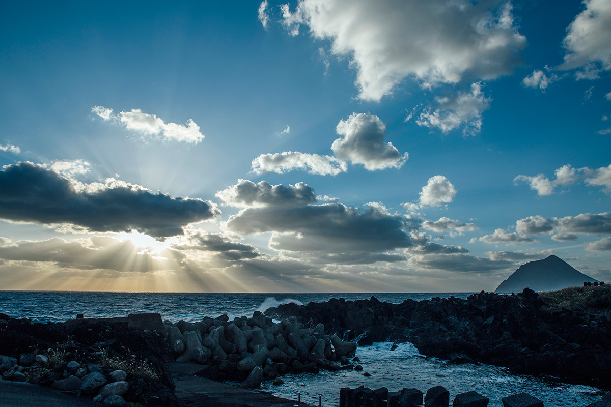
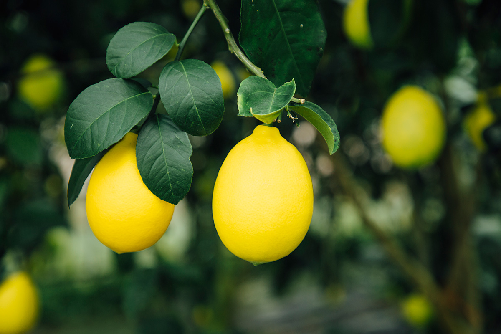
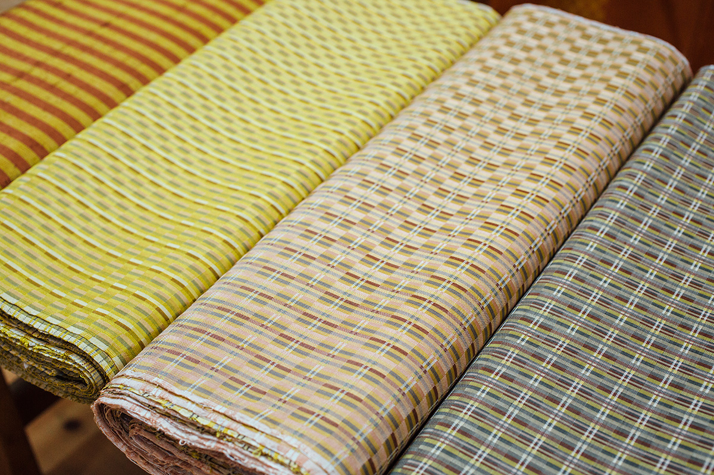
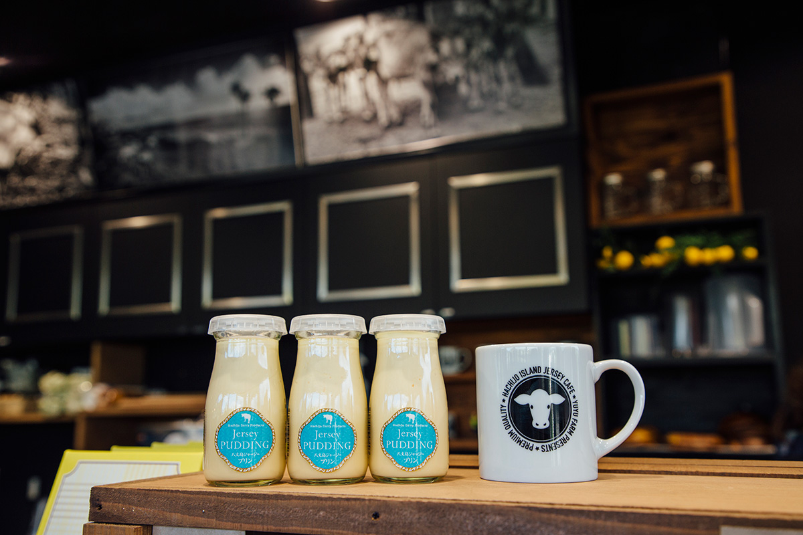
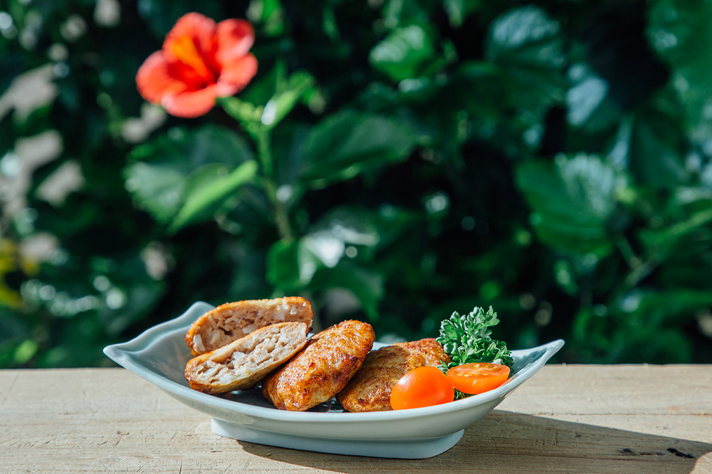

Токио · Хатидзёдзима · еда и ремесло
Хатидзёдзима: золотой цвет острова, до которого от Токио меньше часа лёту

Хатидзёдзима входит в острова Идзу и относится к столичному округу Токио, хотя добраться сюда можно только самолётом или кораблём. Кроме коренных жителей, здесь немало переселенцев, и у этого должна быть причина. Понять это проще всего через еду, а ключевое слово для этой поездки «золотой цвет».
Остров
Тропики в часе от Токио
От аэропорта Ханэда до Хатидзёдзимы около 55 минут полёта, и прилетевших встречают южные растения. Это самые близкие к столице тропики. Путешествуя по острову, стоит держать в голове одно слово: «золотой».
Лимон
Лимон, который едят с кожурой

Первое золото острова это «Хатидзё фрутс лемон». Эти лимоны примерно втрое крупнее обычных. Их оставляют дозревать на дереве, горьких веществ становится меньше, и вкусной получается даже кожура.
«Когда пожелтел целиком, до самого донышка, значит, пора есть. И в сётю добавить тоже вкусно»
производитель лимонов
Начало этой истории положил лимон «Кикути»: его ещё до войны привёз на остров человек, чьё имя он и носит. Плоды этого сорта стали оставлять дозревать на ветке и сделали из них местную марку. Кожура у него тоже вкусная, поэтому такой лимон охотно берут и для готовки, и для переработки. В 2022 году коробка в подарочной упаковке, около 2 кг (6 штук), стоила 5000 иен.
«Хатидзё фрутс лемон»
- Телефон
- +81 4996-2-1223 (сельскохозяйственный кооператив островов Токио, главное отделение)
- Цены / Вход
- около 2 кг (6 штук) в подарочной коробке, 5000 иен
- Сайт
- 8jolemon.tokyo
Ремесло
Кихатидзё: шёлк трёх цветов

Второе золото острова это кихатидзё, традиционная шёлковая ткань Хатидзёдзимы. Её ткут из нитей трёх цветов: жёлтого, рыжевато-коричневого, который здесь называют «каба», и чёрного. Красители даёт природа острова, а красят и ткут вручную. Лучше всего мастерство видно в жёлтом цвете: именно жёлтое крашение считают сутью кихатидзё.
Ткут кихатидзё и в мастерской «Кихатидзё Мэю кобо». Это ткацкий дом, который сохраняет старинные способы крашения и продолжает делать ткань, известную с периода Эдо. В мастерской можно посмотреть, как работают ткачи, а в лавке купить небольшие вещи из кихатидзё.
«Кихатидзё Мэю кобо»
- Адрес
- столичный округ Токио, Хатидзёдзима, Хатидзё, Наканого, 2542
- Телефон
- +81 4996-7-0411
- Часы работы
- 9:00–12:00, 13:00–17:00
- Выходные
- нет
- Сайт
- hachijo.gr.jp
Пудинг
Золотой пудинг из молока джерсейских коров
Если захочется перекусить, рекомендуем пудинг «Хатидзёдзима джерси пудинг». Его делают из молока джерсейских коров, которые растут на острове на свободе. Пудинг золотистого цвета, с насыщенным вкусом и тающей текстурой.

Попробовать его можно в «Хатидзёдзима джерси кафе», фирменном кафе местной молочной компании. Компания держит джерсейских коров, молоко которых отличается высокой жирностью и мягкой сладостью. Для сладостей и напитков кафе берёт как можно больше местных продуктов.
«Хатидзёдзима джерси кафе»
- Адрес
- столичный округ Токио, Хатидзёдзима, Хатидзё, Огаго, 2370-1
- Телефон
- +81 4996-2-5922
- Часы работы
- 10:00–17:00
- Выходные
- нет
Сувенир
«Муро-мэнти»: котлеты из островной рыбы

В дорогу домой стоит взять «Муро-мэнти». Их делают женщины рыболовецкого кооператива, «мамы с побережья». Они перерабатывают пойманную у Хатидзёдзимы ставриду муроадзи и летучую рыбу и отправляют продукты в школьные столовые и на продажу на острове и за его пределами.
«Хотим, чтобы дети ели рыбу Токио, окружённого морем»
женская секция рыболовецкого кооператива
Золотистые котлеты дают распробовать остров уже дома.
«Муро-мэнти»
- Телефон
- +81 4996-2-2077 (женская секция рыболовецкого кооператива Хатидзёдзимы)
- Часы работы
- 8:00–17:00
- Выходные
- суббота, воскресенье, праздничные дни, Обон, новогодние праздники
Дорога
Как добраться
В 2022 году на Хатидзёдзиму летали самолёты ANA из аэропорта Ханэда, около 55 минут в пути. Из Токио, от причала Такэсиба, ходит и большой ночной пассажирский корабль, в 2022 году дорога занимала от 10 часов 25 минут.
Как добраться на Хатидзёдзиму
- Как добраться
- самолёт ANA из аэропорта Ханэда, около 55 минут; ночной корабль от причала Такэсиба в Токио, от 10 часов 25 минут
- Телефон
- +81 4996-2-1377 (туристическая ассоциация Хатидзёдзимы)
Фото: Хироюки Кудо, Юри Ямасаки, Юити Ёкота, Хироюки Ёда.